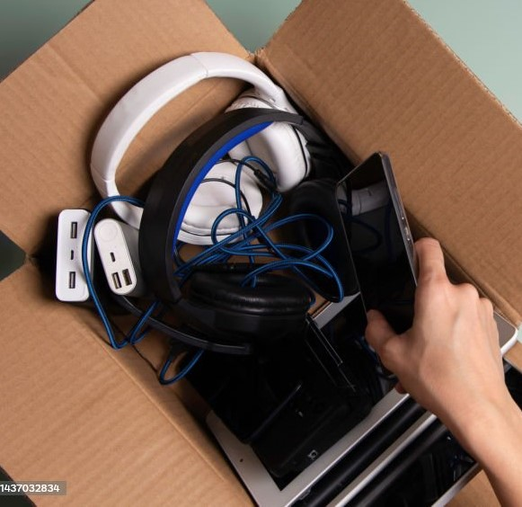

About Us

Welcome to E-Waste Facility Locator, your reliable resource for finding convenient and responsible solutions for electronic waste disposal.
At E-Waste Facility Locator, our mission is to simplify the process of recycling and disposing of electronic devices while promoting sustainability and environmental responsibility.
Our Values:
Environmental Sustainability:
We are committed to reducing the environmental impact of electronic waste. Our focus is on responsible recycling and proper disposal practices to help create a greener future.
Accessibility:
We aim to make e-waste disposal accessible to everyone. Our goal is to provide easily accessible drop-off locations, ensuring that individuals and businesses can dispose of their electronic devices responsibly.
Community Education:
We believe in raising awareness about the importance of e-waste recycling and responsible disposal. Our mission is to empower individuals and businesses with knowledge to make eco-friendly choices.
Experience:
We provide a user-friendly platform that simplifies the process of locating e-waste drop-off points, checking operating hours, and scheduling pickups for larger quantities of electronic waste.
Thank you for choosing E-Waste Facility Locator as your trusted partner in responsible e-waste disposal. Together, we can make a positive impact on electronic waste management and contribute to a more sustainable world.
If you have any questions or feedback, please feel free to reach out. We're here to assist you every step of the way.